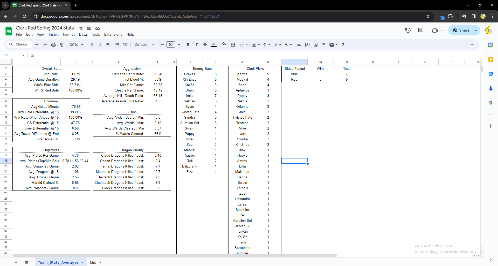
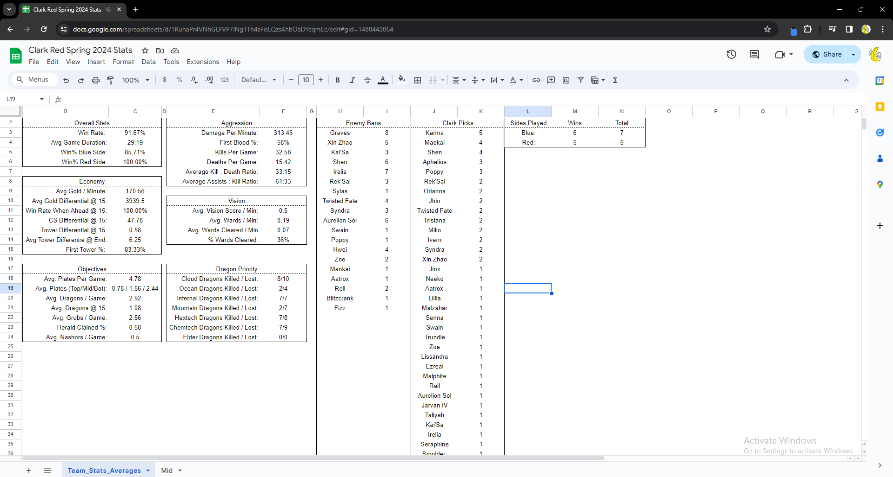

This project utilizes the Riot Games API with python to find the stats of a inputed Riot ID. It will average out common stats for a user defined amount of games. There are plans to create an app from this with a GUI and an easier way to save the data. This game was created for my CSCI120 class as the final project. It was utlized by the Clark University League of Legends team and will continue to be developed.
Team: N/A
Role: Programmer
Contributions
- Used Python to access the Riot Games API then pulled data from matches by calling to it
- Utilized the Pandas Library to create a database that I can easily import to Google Sheets
 
